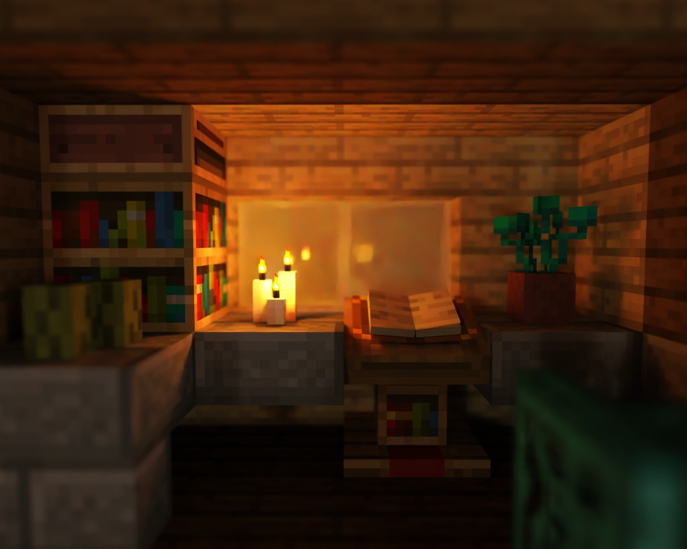
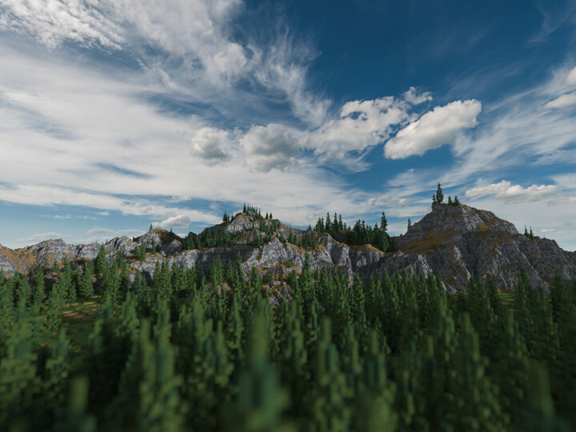

The primary goal of this project is to extend CS184's path tracer to support beautifully rendering minecraft worlds and small builds. Ideally, the path tracer is able to handle intricate and small scenes with a high level of detail and light quality, but we would also potentially like to investigate support for wider scenes of several minecraft chunks to display landscapes.
We enjoyed working on the Path Tracer and seeing beautifully rendered final results. We thought it would be great to be able to extend the functionality of the path tracer with texture support, but also wanted to render something cool that we could be excited about. Rendering our own minecraft builds also gives the ability to easily create scenes ourselves and bring them to life in the Path Tracer. Additionally, latest versions of Minecraft have included real-time Path Tracing, so PBR texturepacks for Minecraft are widespread. We will be able to use these texture packs to add more than just texture functionality, but also things like metallic and roughness maps! Finally, Minecraft without shaders is quite static and boring lighting-wise, and it would be exciting to see it in a new light.
Much of the nuance in this project will be in the full details of PBR. Minecraft texture packs typically have 5
additional maps on top of the texture itself:
The primary goal of this project is to extend the Path Tracer with textures, and ideally PBR texture packs. The goal is to be able to create pleasing images of Minecraft world's or builds that we wouldn't be able to see otherwise. Since Minecraft typically hasn't been a path traced game, lighting effects like reflection, refraction, depth of field, and non-block-based lighting would be an entirely new way to view builds. We hope to create images like the two (primarily the first) below:
|  |  |
In the first image, notice everything that isn't there in Minecraft. Depth of field, lighting and shadows that actually makes sense (notice the left side of the lectern,where the half-slab casts a tiny shadow). The shadow of the plant on the wall, and the candles reflecting in the glass.
Its tough to say how we may evaluate the results out of the Path Tracer, other than "by looks". However, one goal we can keep in mind is to keep the project performant, and also to stylistically not drag ourselves to far away from what we expect Minecraft to look like.
To summarize, what we plan to deliver: A Path Tracer that is able to render small but detailed scenes like the first image above. In order to do this, we need to first and foremost build the infrastructure to import and support minecraft builds and lighting into the renderer. Then, we must build support for regular texture maps. Finally, we will add support for PBR texture maps where possible, such as metallic maps and roughness maps. We plan to add emissive maps aswell but see this as having the potential to be a larger problem than expected. Importantly, we would like to do all of this while keeping the program performant.
If all goes well: Add support for more blocks that might be more complicated, such as water or . This wouldn't be similiar to raytracing an actual water material physically, as we aim to keep the style of minecraft. Still, it would be additional work. Further, we would also like to look into some sort of global illumination in order to be able to render larger scenes that don't have actual lights placed everywhere, such as landscapes.
Luckily, there are plenty of good resources on Path tracing out there. In fact, Microsoft has published some specifics on PBR in Minecraft. Additionally, a few Minecraft path-tracers exist already, such as Chunky. These may be useful in navigating Minecraft specific nuances, like how certain textures or models work. There are also some free books available on PBR such as PBRT. Finally, there are also many resources available form other courses (and our own!) on Path Tracing and specifically using Textures, such as these slides from Cornell's CS4620. In terms of software, we can use software such as Mineways to turn Minecraft builds or worlds into OBJ files that can be imported in to Blender. From there, we can make any neccessary changes and export them as COLLADA files for import into the Path Tracer. Since we are extending Project 3's pathtracer, the computing platform will be MacOS and Windows. We don't expect renders to take substantially longer, so our laptops should suffice, but we will also have access to more powerful hardware like a Ryzen 9 5950x for final renders.